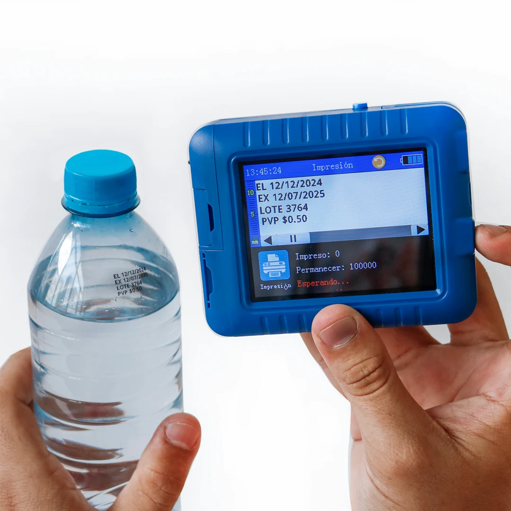

APPLICATIONS / SUBSTRATES
How to evaluate coding on paperboard, plastic, glass and flexible packaging
The substrate name is only the beginning. Its finish, package geometry and what happens after printing determine whether the code works within your process.

Evaluate the surface, not just the substrate name
Two packages both described as “plastic” can behave differently. The resin, additives, surface treatment and finish influence how ink deposits and stays in place. The same applies to uncoated versus laminated paperboard, or clean glass versus a bottle with condensation.
Describe the exact print area, including whether it is smooth, textured, absorbent, glossy or coated. Track changes in the packaging supplier and repeat the evaluation when necessary. A trial on an old sample does not necessarily represent a new supply.
What to observe on each packaging type
| Surface | What to watch | Useful trial |
|---|---|---|
| Paperboard | Coating, texture and surface dust. | Compare character definition in the actual marking area. |
| Plastic | Finish, curvature and container stability. | Check readability and durability after drying and handling. |
| Glass | Cleanliness, moisture and travel over the curve. | Evaluate the container in its normal printing condition. |
| Flexible packaging | Folds, tension and deformation during the pass. | Support a flat area and check the code after flexing the package. |
M1 is operated by hand and uses the S70 cartridge offered by Rigel Mexico. Evaluate that combination on your sample: a general list of substrates cannot replace testing the actual finish and conditions of your product.
Package geometry is part of the trial
A flat area helps maintain an even travel path. On a small cap or curved bottle, the support area may be more limited than the apparently available space. Place the message where the printer can move steadily and the operator can reach it comfortably.
For pouches and films, avoid wrinkles and areas that collapse during movement. Define how the pack will be supported and when it will be coded: before or after filling can change the surface shape. The trial should reproduce that decision.

A simple protocol for comparing results
Start with the final message or one that reproduces its size and coverage. Use several units of the actual packaging and keep trial conditions consistent. Changing the message, support and surface simultaneously makes it difficult to identify what caused a different result.
First inspect character completeness, spacing and placement. Then evaluate drying and print durability under handling representative of the product. Define acceptable results with your quality team: applications do not all require the same durability or face the same environment.
- Identify samples by substrate, supplier, finish and trial date.
- Record the message template and cartridge used.
- Record surface conditions at printing and inspection.
- Keep photographs of the result and an approved physical sample.
- Repeat the trial if packaging or its process condition changes.
Interpret the defect before changing settings
Describe an unsatisfactory print precisely. A distorted message, an incomplete line and ink that transfers during handling are different problems. First compare the configured content and travel stability, then review surface and ink conditions.
Avoid trying to solve an adhesion issue by adding content or increasing size without a technical reason. Do not experiment with arbitrary cleaning solvents. Keep the sample and request guidance to assess the cause with the correct printer and consumable. Controlled changes reveal useful information; simultaneous adjustments often obscure the cause.
Turn the sample into a specific inquiry
For an application review with Rigel Mexico, send the substrate name, print-area photographs, required text or code and estimated volume. Explain whether the product is cooled, exposed to moisture, rubbed or stacked after marking. These conditions help plan a useful evaluation and determine how M1 will fit into daily work.
Frequently asked questions
Does one plastic trial cover every bottle?
Not necessarily. Changes in resin, finish, shape or surface conditions can affect the result. Evaluate the exact pack format you intend to use.
Should I only inspect a fresh print?
Also inspect the code after drying and intended handling. Acceptance should reflect your actual process.
Let’s discuss your application
Share your substrate and required print message with our team in Mexico.
Contact Rigel